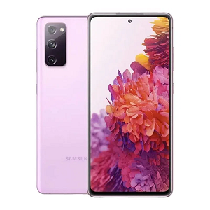

NOVIDADES

Samsung Galaxy S20 128 GB
R$2.816,80

Samsung Galaxy S21 FE 128 GB
R$2.315,06
Samsung Galaxy S20 128 GB
R$2.816,80
Samsung Galaxy S21 FE 128 GB
R$2.315,06

Samsung Galaxy S10 128GB
R$1.915
Bem-vindo à nossa Àrea de serviços de manutenção de celulares! Sabemos o quanto seu smartphone é importante para você, e é por isso que oferecemos uma ampla gama de serviços de reparo e manutenção para garantir que seu dispositivo esteja sempre funcionando da melhor forma possível.
Nossa equipe altamente qualificada e experiente está aqui para ajudar a resolver uma variedade de problemas,desde telas quebradas até problemas de bateria e falhas no software. Quando você traz seu celular para nós,pode ter certeza de que ele está nas mãos certas.
Nosso processo de reparo é simples e efiente Primeiro, realizamos uma avaliação completa do seu dispositivo para identificar quaisquer problemas ou danos. Em seguida, discutimos as opções de reparo com você e fornecemos um orçamento transparente e justo.
Nossa equipe especializada resolve uma variedade de problemas com celulares, desde telas quebradas até falhas de software, garantindo que seu dispositivo receba os cuidados adequados.
Oferecemos um processo de reparo simples e transparente, começando com uma avaliação completa do seu dispositivo e fornecendo opções de reparo com um orçamento justo.
Se você está enfrentando problemas com seu celular, não hesite em nos visitar. Estamos aqui para ajudar e teremos prazer em restaurar seu dispositivo à sua melhor condição.

Samsung Galaxy A10 Usado
R$449.00
Samsung Galaxy A32 Usado
R$899,00
Samsung Galaxy A15 Usado
R$1.099